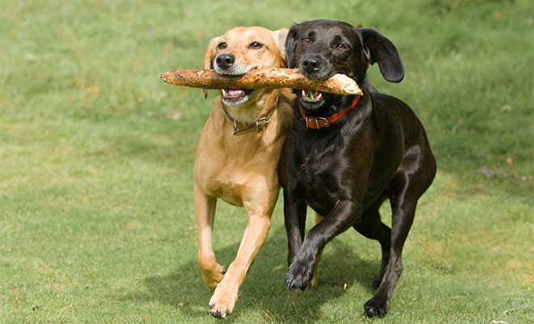
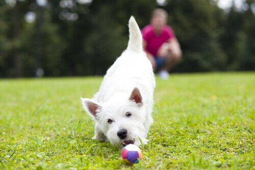
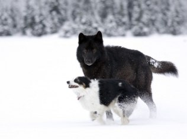
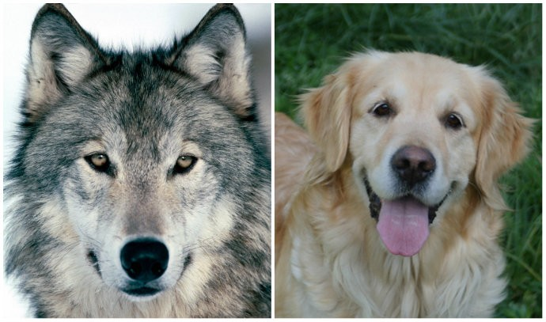
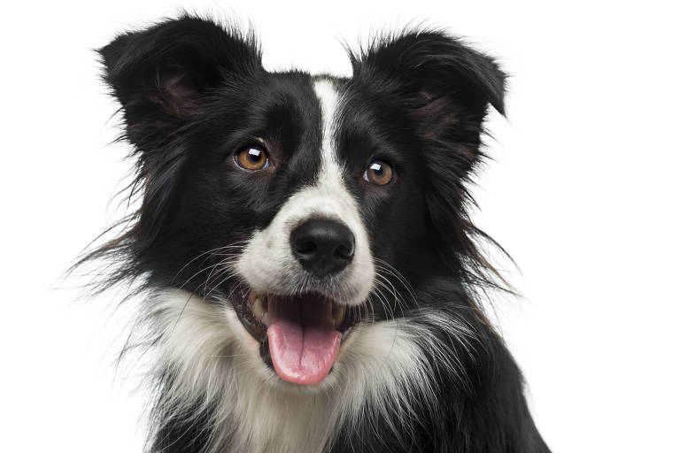
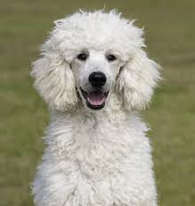
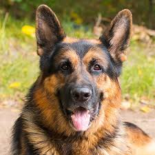
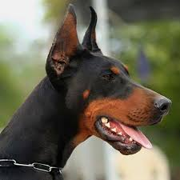
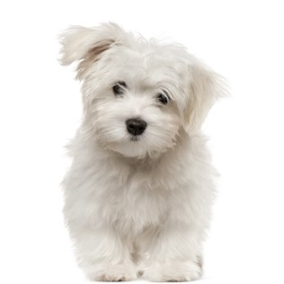
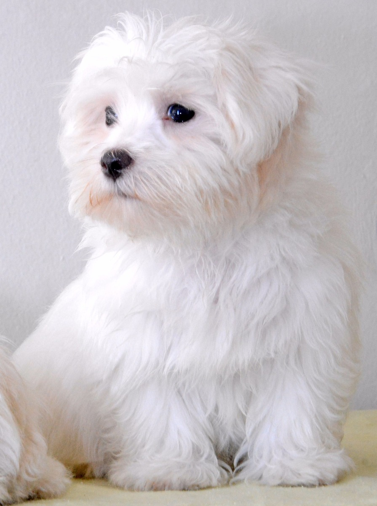

O melhor amigo do homem
O cão (nome científico: Canis lupus familiaris),no Brasil também chamado de cachorro, é um mamífero carnívoro da família dos canídeos, subespécie do lobo, e talvez o mais antigo animal domesticado pelo ser humano. Teorias postulam que surgiu do lobo cinzento no continente asiático há mais de 100 000 anos. Ao longo dos séculos, através da domesticação, o ser humano realizou uma seleção artificial dos cães por suas aptidões, características físicas ou tipos de comportamentos. O resultado foi uma grande diversidade de raças caninas, as quais variam em pelagem e tamanho dentro de suas próprias raças, atualmente classificadas em diferentes grupos ou categorias. As designações vira-lata (no Brasil) ou rafeiro (em Portugal) são dadas aos cães sem raça definida ou mestiços descendentes.
Com expectativa de vida que varia entre dez e vinte anos, o cão é um animal social que, na maioria das vezes, aceita o seu dono como o "chefe da matilha" e possui várias características que o tornam de grande utilidade para o homem. Possui excelente olfato e audição, é bom caçador e corredor vigoroso, relativamente dócil e leal, inteligente e com boa capacidade de aprendizagem. Deste modo, o cão pode ser adestrado para executar um grande número de tarefas úteis, como um cão de caça, de guarda ou pastor de rebanhos, por exemplo. Assim como o ser humano, também é vítima de doenças como o resfriado, a depressão e o mal de Alzheimer, bem como das características do envelhecimento, como problemas de visão e audição, artrite e mudanças de humor.
A afeição e a companhia deste animal são alguns dos motivos da famosa frase: "O cão é o melhor amigo do homem", já que não há registro de amizade tão forte e duradoura entre espécies distintas quanto a de humano e cão. Esta relação figura em filmes, livros e revistas, que citam, inclusive, diferentes relatos reais de diferentes épocas e em várias nações. Entre os cães mais famosos que viveram e marcaram sociedades estão Balto, Laika e Hachiko. Na mitologia, o Cérbero é dito um dos mais assustadores seres. No cinema, Lassie é um dos mais difundidos nomes e, na animação, Pluto, Snoopy e Scooby-Doo há décadas fazem parte da infância de várias gerações.


Cães e Lobos
Levando-se em consideração os estudos que apontam o lobo como antecessor do cão, é possível traçar semelhanças e diferenças entre estas duas subespécies. Os mais antigos esqueletos de cães descobertos datam de cerca de 30 000 anos depois do aparecimento do Homo sapiens, sempre exumados em associação com o resto das ossadas humanas. Aos pesquisadores, pareceu lógico associá-los aos canídeos pré-existentes, como o lobo, o chacal e o coiote. No entanto, em descobertas feitas na China, nas quais encontravam-se vestígios dos cães, o coiote e o chacal não foram identificados na região. Ainda no Oriente, notou-se as primeiras associações do homem com uma variedade de lobo com tamanho reduzido, de cerca de 150 000 anos. Nessa teoria, a ausência das duas espécies e o fato de Canis lupus e Canis (lupus) variabilis(a) terem coexistido e possivelmente reproduzido, pode confirmar a explicação do lobo como ancestral do cão, e por sob questionamentos a teoria mais difundida, do acasalamento entre o cinzento, o chacal e até mesmo, o coiote. Essa hipótese, segundo estudos mais recentes, aliou-se a novas descobertas: o aparecimento de algumas raças de cães nórdicos diretamente originados do lobo; o resultado de trabalhos genéticos comparando o DNA destas espécies, que mostraram uma semelhança superior a 99,8% entre o cão e o lobo, enquanto não ultrapassa 96% entre o cão e o coiote; e a existência de mais de 45 subespécies de lobos, que poderiam estar na origem da diversidade racial observada nos cães.
As semelhanças entre cães e lobos dificultam os trabalhos dos arqueólogos para fazer distinção exata entre os vestígios de cada subespécie, quando apresentam-se incompletos ou quando o contexto arqueológico torna a coabitação pouco provável. De certo, o cão primitivo só se diferencia do seu ancestral por alguns detalhes pouco fiáveis, como o comprimento do focinho, a angulação do stop ou particularidades na arcada dentária.
O lobo-cinzento, que supõe-se ser a única espécie de lobo tendo o cão como uma de suas subespécies, é um canídeo selvagem que vive em alcateias. Fisicamente, pode atingir 2 m de comprimento e pesar mais de 60 kg. Suas cerca de quinze subespécies habitam florestas ou planícies da Europa, Ásia, Estados Unidos, Canadá e o norte da África, mas, em alguns lugares, como o Japão, estão à beira da extinção. Já o cão é o único canídeo domesticado pelo homem, em um processo milenar. Seu tamanho varia entre 1 – 45 kg, e vive tanto isolado quanto em matilhas. Sua diversidade de raças é, em boa parte, devida à seleção artificial feita pelo homem na busca de qualidades aproveitáveis e de submissão. É ainda um animal sem riscos de extinção, apesar de algumas raças não mais existirem. Em comum, além das características físicas, estes dois possuem as comportamentais e de povoamento. Suas caudas compridas são usadas para comunicação quando precisam mostrar obediência diante do dominante, por exemplo. Vigorosos, não são tão velozes quanto os felinos, mas capturam suas presas pelo cansaço da persistência. Pelo globo, dispersaram-se há milhares de anos, espalhando-se pela Ásia, Europa e África. À Oceania e às Américas, chegaram levados pelo homem.
O modo como se alimentam também é semelhante. O lobo obtém a maior parte de sua comida caçando em grupo e atacando presas de grande porte. A competição entre seus membros leva ainda a um rápido consumo do alimento. Após matar a presa, come até se satisfazer, passando um longo período sem se alimentar. Como os antepassados, os cães domésticos comem rapidamente e poucas vezes ao dia. Essa tendência em comer muito rápido pode virar um problema, pois os cães podem se engasgar ou engolir grandes quantidades de ar. Os caninos alimentados em grupo podem apresentar as relações de dominação dos lobos e, como resultado, os dominantes obtêm a maior parte do alimento e os subordinados ficam com menos do que precisam. Como diferença, ao passo que o lobo alimenta-se do que captura, o cão doméstico usufrui de rações fabricadas especificamente para suas necessidades físicas. Comunicativamente, além das comuns características básicas de uso de gestos e odores, estas duas subespécies apresentam uma diferença marcante: enquanto os lobos amadurecem suas formas de comunicação conforme atingem a idade adulta, certas raças caninas resultantes de seleção artificial mantêm a forma que aprenderam enquanto filhotes. Em pesquisa realizada entre quinze raças caninas e o lupino, o descendente direto husky siberiano foi o único a confirmar igualdade nos meios de comunicação, marcando quinze pontos em quinze avaliações. Na outra ponta, o cavalier king charles spainel mostrou dois, o que ainda assim é capaz de demonstrar semelhança, já que outras raças superaram os 50% de equiparidade entre seus meios de comunicação mesmo com a interferência humana direta, que sempre busca as características que melhor lhe favoreçam, em detrimento dos instintos animais. Em suma, apesar de não ser possível definir como única, a descendência direta do lobo pode ser confirmada devido as características muito semelhantes tanto físicas quanto comportamentais, ainda que a interferência humana tenha sido extrema.


Os mais inteligentes

Border Collie
Dócil e bastante agitado, o border collie ganha destaque em competições do mundo canino, como as de Agility e para o uso no pastoreio de ovelhas. Apesar de se adaptar bem a diferentes ambientes, o cão da raça não gosta de ficar sozinho, e precisa de carinhos e exercícios constantes, é uma raça que gosta de receber comandos.

Poodle
Muito popular entre os brasileiros amantes de pets, o poodle é considerado um dos cachorros mais inteligentes do mundo. Dono de uma alta capacidade de compreensão, pode ser facilmente treinado tanto para ser um bom companheiro quanto para atuar como cão de guardapara alerta ou caçador.

Pastor Alemão
Conhecido como um ótimo farejador e cão de guarda, o pastor alemão é muito inteligente e altamente protetor. Corajoso e amigo, gosta de atividades que envolvam ações que possam ajudar aos outros, e se dá muito bem com crianças, apesar do seu grande porte.

Dobermann
Bastante agitado e fã de atividades físicas, o dobermann é outro cão inteligente que se destaca em competições caninas. Sociável, pode conviver tranquilamente com famílias inteiras, e é considerado um bom cão de guarda.
O melhor Cão do mundo
Obiviamente, o melhor cão do mundo tinha de ser o meu!.
O nome dele é FLOKI, ele é um cão da raça maltês, esta que é uma das raças mais antigas do mundo, tendo sua origem em cidades litorâneas do Mediterrâneo, onde era utilizado para caçar ratos em armazéns e porões de navios. Cheio de energia, obediente e de temperamento gentil, o maltês é um companheiro de brincadeiras que gosta de colo e mimos. Não é a toa que ele e um dos melhores cães do mundo !!!.

